2001: Uma Odisseia no Espaço – Análise Completa
Uma análise sobre evolução humana, tecnologia e transcendência
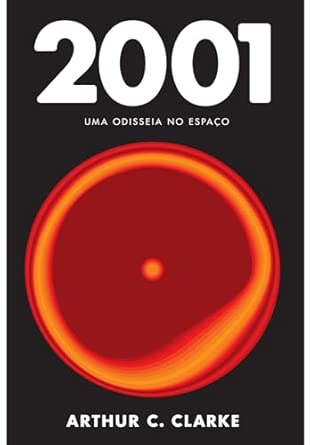
Homero, Joyce, Kubrick e Clarke
Há cerca de 2800 anos, Homero compôs o poema épico A Odisseia. James Joyce, um dos maiores romancistas do século XX, recontou a obra de Homero ambientando-a em um único dia de 1904 em Dublin.
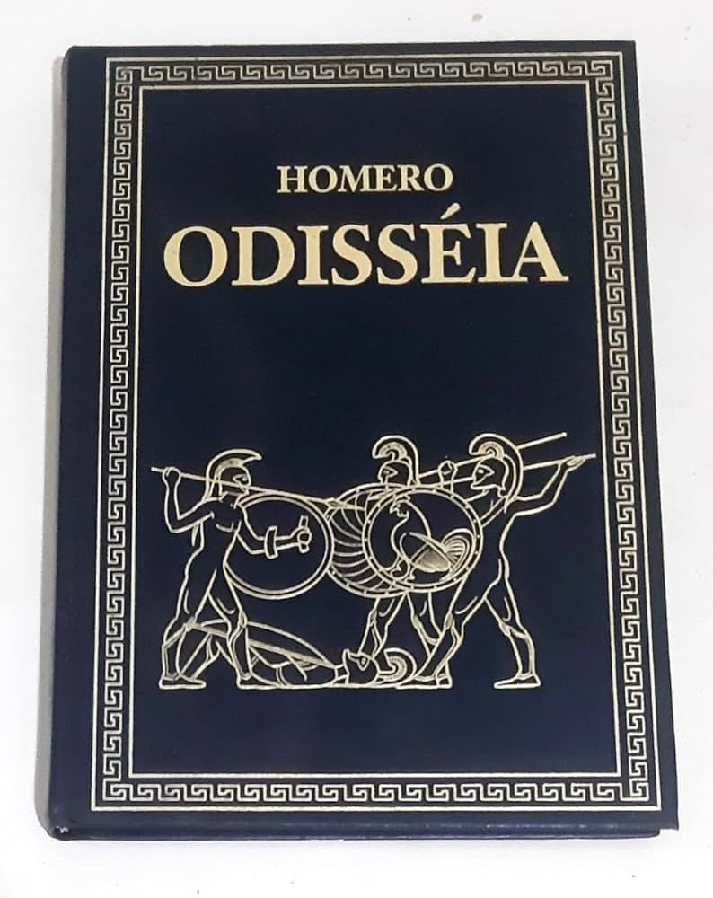
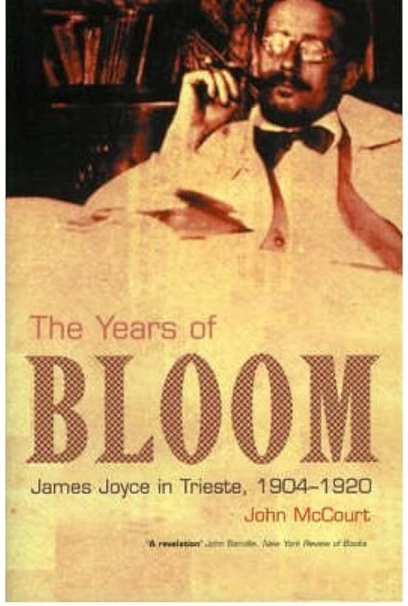
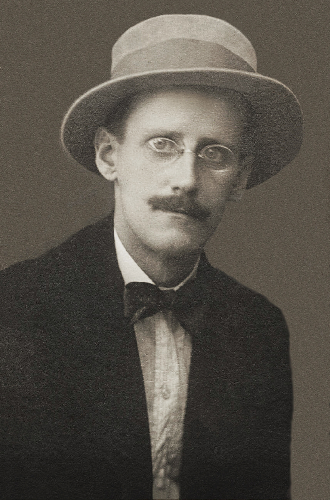
Stanley Kubrick e Arthur C. Clarke reinterpretaram essa jornada épica em 1968 com o filme "2001: Uma Odisseia no Espaço", transportando o mito para o universo cósmico.

Quarenta e seis anos após publicar o livro Stanley Kubrick e Arthur C. Circlack lançaram um filme 2001 - Uma Odisseia no Espaço, levando o herói para o espaço do frio interestelar.
Kubrick e Arthur C. Clarke reimaginaram o cyclop, como o "Hal 9000" com seu olho vermelho brilhante na câmera, como Odisseu , o astronauta David Bowman precisa ser mais esperto e escapar de seu cyclop.

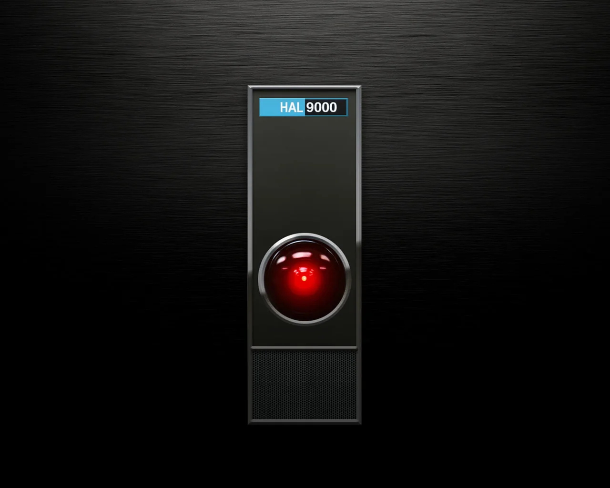
Tal filme foi classificado como "O melhor filme de ficção científica" pelo criador de Star Wars (George Lucas).
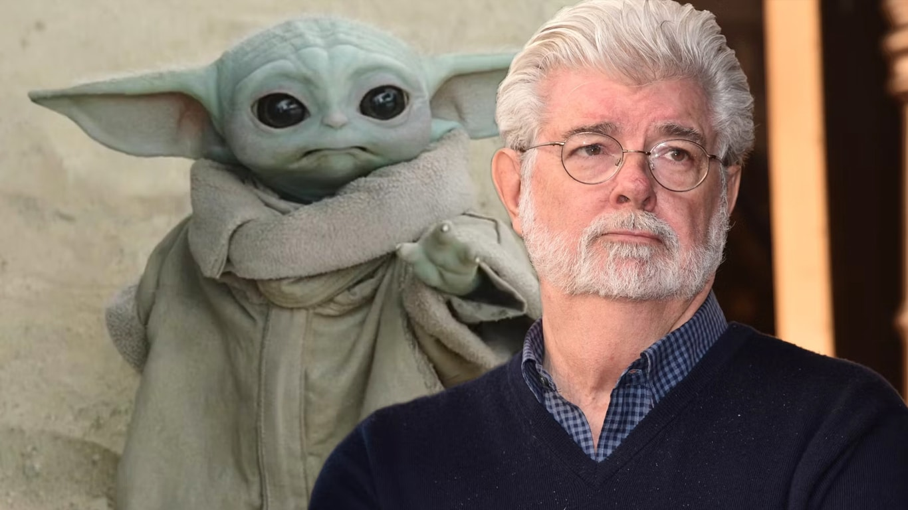
Martin Scorsese declarou:"O meu lado religioso encontrou um conforto extraordinário no final do filme".
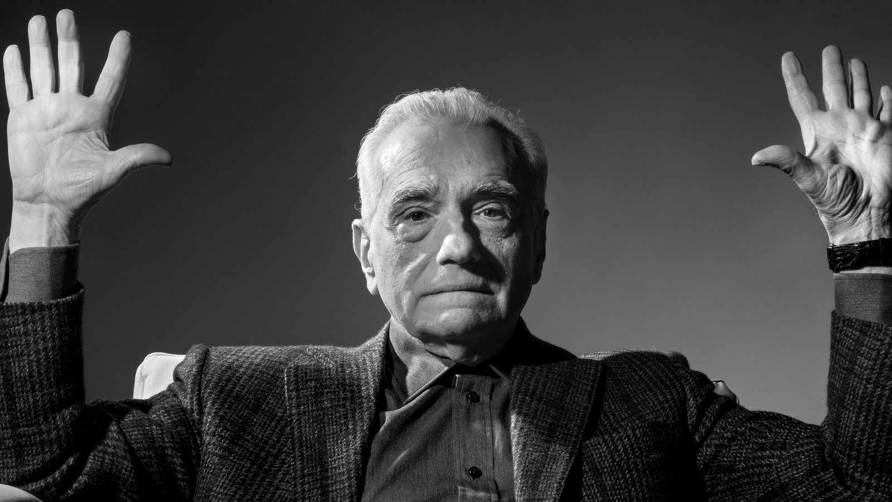
Ulisses é considerado um dos romances mais importantes do século XX. Seu autor, James Joyce, foi um dos grandes romancistas modernistas do século XX. Joyce revolucionou a literatura usando técnicas como o “fluxo de consciência”, mostrando os pensamentos dos personagens de forma direta e fragmentada. Por isso, Ulisses ficou conhecido como um marco do romance moderno. 2001 – Uma Odisseia no Espaço é considerado por muitos um dos maiores filmes da história, para alguns é o maior filme da história. O que tais peças fizeram de tão importante? Ambos contextualizaram uma das histórias mais antigas e clássicas e de grande peso na literatura ocidental da Odisseia de Homero.
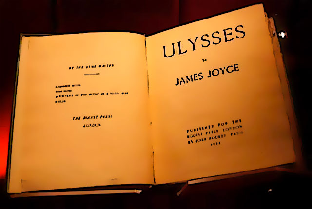
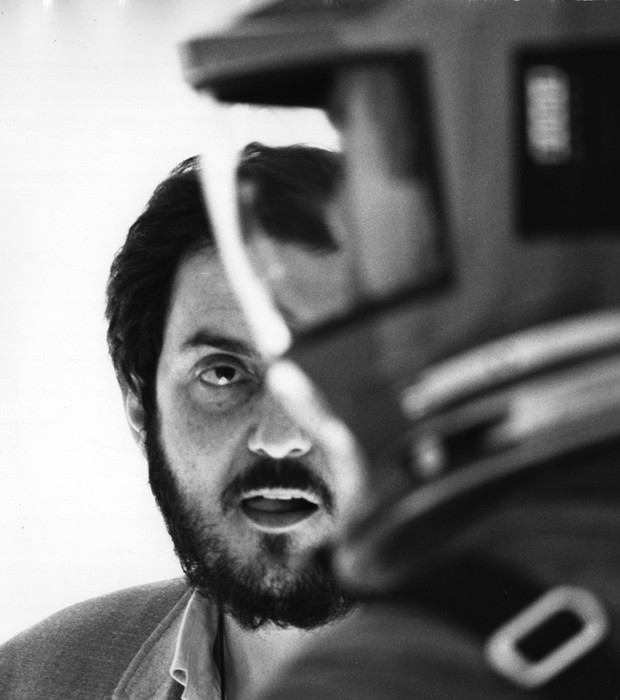
Star Wars, Alien, Jornada nas Estrelas, Sunshine, Wall – E e Lunar possuem um pouco do DNA de 2001. Alfonso Cuarón autor de Wall - E e Christopher Nolan, autor de Interestelar, evitaram assistir enquanto dirigiam. Ambos com receio do filme tornar-se uma cópia de 2001! Nolan afirma: é um filme “completo” e muito “autoritário”. Significa deixá-lo de lado, deixando sua mente criar algo internamente.
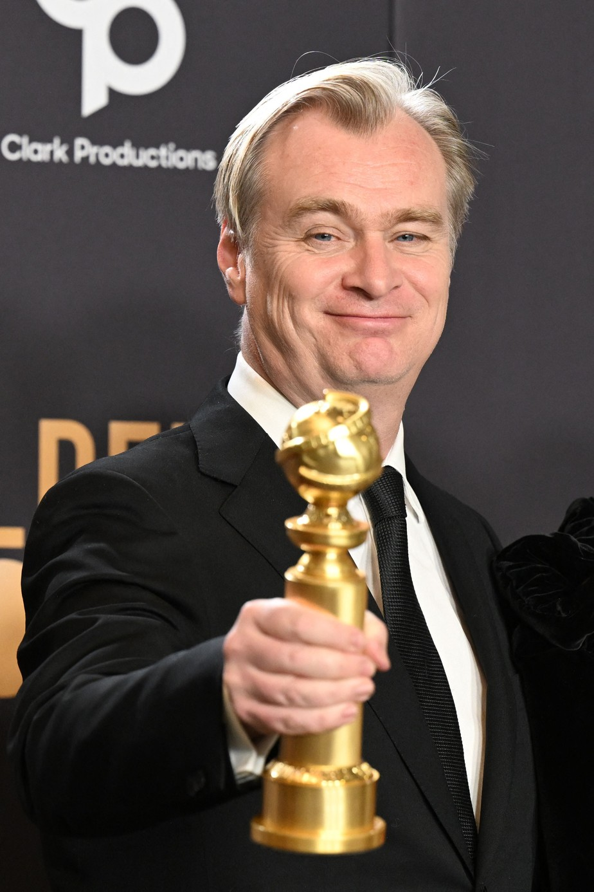
Seu design antecipou o Ipad e inspirou diretamente o Ipod; trazendo um futuro imaginado que evoca o passado antigo!

Em uma entrevista ligada à revista Playboy, ele afirmou algo próximo de: “Não é uma mensagem que eu pretenda transmitir em palavras.” Uma experiência não verbal! Em aproximadamente 02:24 minutos (149 minutos), há apenas pouco menos de 40 minutos de diálogo. Declarou: queria criar uma experiência cinematográfica que atuasse além das palavras e da lógica racional. Em entrevistas, ele dizia que o filme deveria funcionar quase como música ou sonho — atingindo diretamente emoções, intuições e o subconsciente do espectador. Teóricos da conspiração argumentavam de que o pouso na lua (missão Apollo 11) havia sido filmado e dirigido por Kubrick, levantando hipóteses de que tudo era uma farsa. A teoria surgiubaseando-se que o filme 2001 – Uma Odisseia no Espaço tinha efeitos extremamente avançados para época.
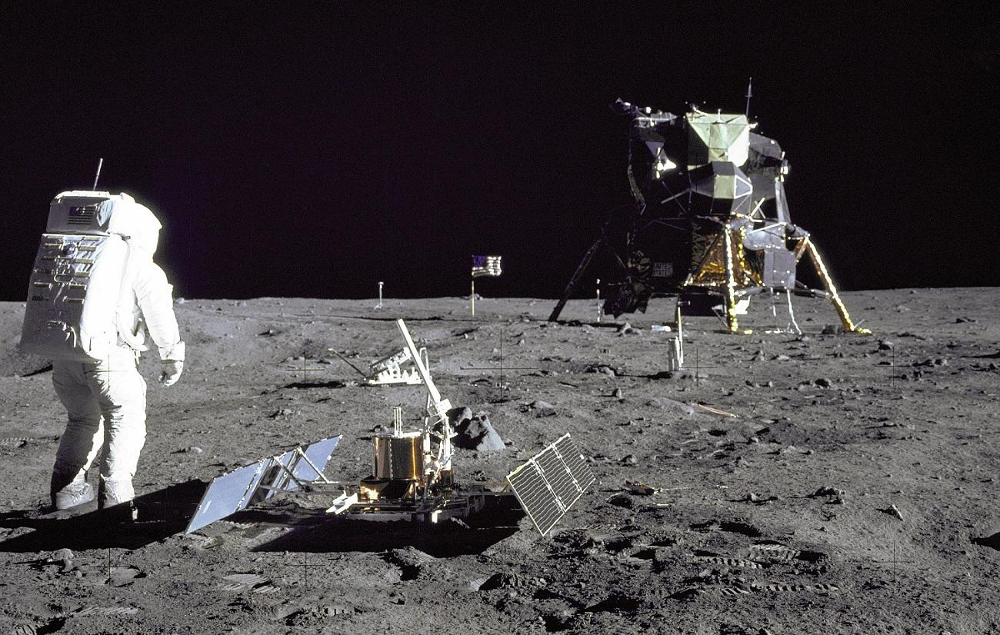
Kubrick ironicamente ridicularizou alguns críticos como um “lúmpen” literário, dogmaticamente ateu, materialista e preso a terra que acha que a grandeza do espaço e os mistérios da inteligência cósmica uma anátema! Kubrick não defendia necessariamente uma religião específica. O que ele criticava era a redução da experiência humana a um materialismo fechado, incapaz de contemplar:
- O desconhecido
- A evolução da consciência
- A possibilidade de inteligência cósmica
- Experiências metafísicas
Os elementos que afastam internautas a assistirem e apreciarem a obra são a paciência exigida pelo ritmo do filme. Cada cena apresenta quadros longos, lentos e contemplativos.
O Monólito
O monólito representa a intervenção externa no processo de evolução humana, simbolizando o avanço da consciência e da inteligência.
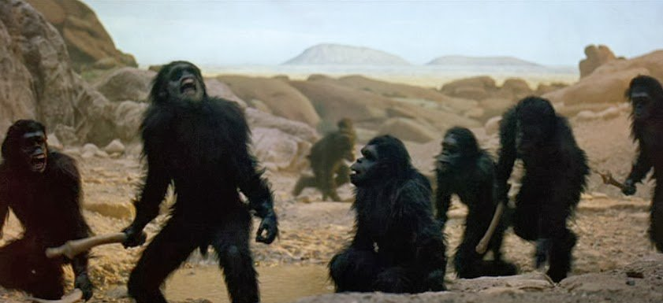
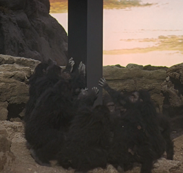
A interpretação do monólito varia entre metáforas tecnológicas, filosóficas e existenciais, sendo um dos elementos mais simbólicos da obra.
Começando com hominídeos, MoonWatcher e sua tribo, nome batizado por Kubrick que é apresentado na introdução do filme. MoonWatcher descobre que seu patriarca morre durante a noite, não sabendo que o ancião é sue pai, tal relacionamento estava além da sua compreensão e ao olhar para o corpo sem vida, sente algo, semelhante a tristeza. Kubrick não aborda uma perspectiva fisiológica, mas sim no aspecto da evolução humana emocional. O Monólito Para Kubrick a única forma de o ser humano evoluir seria com ajuda externa. Aí que entra em cena o monólito! Existem muitas interpretações: umas complexas e outras simples. A essência do monólito segundo Kubrick significa a interação de uma vida alienígena aqui na terra. Outras interpretações afirmam que o monólito nada mais nada menos é Lúcifer que cai do céu, enviado à terra, representando uma exploração do gnosticismo luciferiano.
Rob Ager é um dos maiores críticos especialista das obras de Stanley Kubrick. Para ele o significado do monólito é algo muito simples: uma tela. Dentro do roteiro Kubrick apoia sutilmente essa interpretação, pois, o monólito passou por várias formas antes de assumir a forma de retângulo. O roteiro inicialmente possui uma forma de cubo, mas aos poucos Kubrick foi percebendo que a forma ideal seria um retângulo, semelhante à uma tela invertida. O primeiro momento que o monólito aparece, é afirmado: um som sai do monólito, atraindo primatas até ele. Como isto é descrito? “totalmente encantados se reúnem ao redor do cubo, esquecendo-se das dificuldades dos dias, dos perigos do crepúsculo e da fome. A genialidade pode ser interpretada como nada mais nada menos que uma TV!
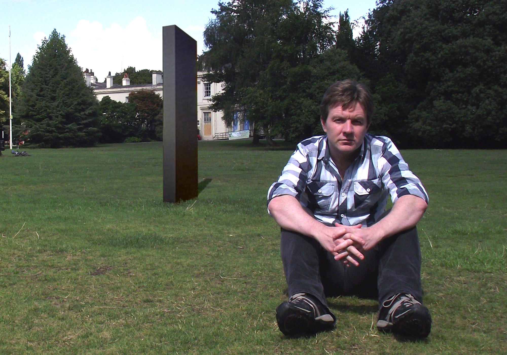

Representando TV, ou cinema, onde pessoas se reúnem para esquecer o que acontece no mundo lá fora! Uma análise mais profunda outro trecho afirma: “Agora, as rodas giratórias começam a se fundir e os raios se fundem em barras luminosas que se afastam lentamente para distância, girando em seus eixos e os hominídeos observam de olhos arregalados, hipnotizados, cativos do cubo de cristal, então, por alguma mágica do que tudo aconteceu antes, uma cena perfeitamente normal aparece.”.

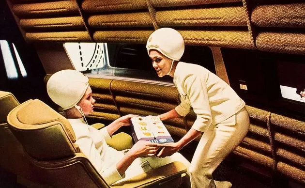
Na linha de interpretação, no momento em que os primatas assistem uma cena neste cubo eles observam: uma família de primatas, saudável, mais disposta do que eles, que utilizam mãos para segurarem objetos como ferramenta e armas. Após assistirem, imitam o comportamento, levando à uma próxima etapa da evolução.
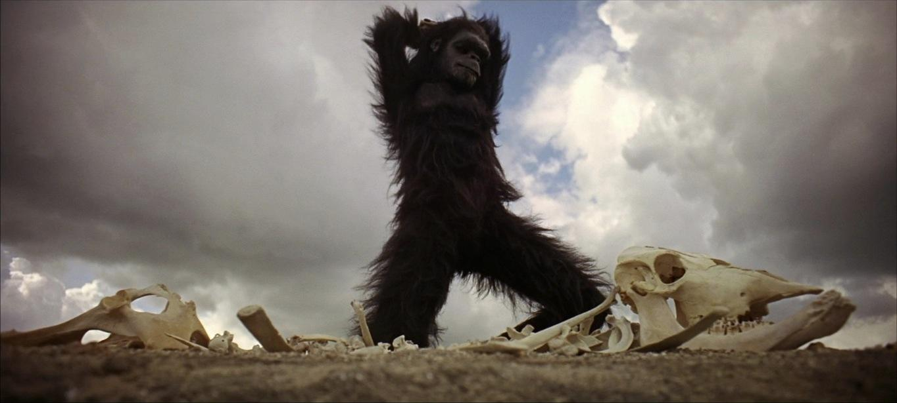
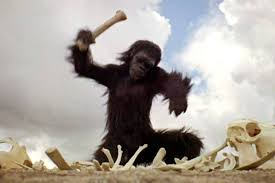
Após esta cena o filme salta para o ano de 2001, demonstrando o avançado tempo, diante de uma tripulação estando em uma nave espacial, descobrindo um objeto encontrado na lua. O monólito enterrado na lua, de acordo com eles, foi enterrado a quatro milhões de anos atrás. O roteiro diz o seguinte: “A lua teria sido um ponto de partida para as pesquisas preliminares na terra.”. Ou seja, um milhão de anos antes de aparecer na terra, já estava na lua. O que o roteiro trás? As supostas criaturas alienígenas enterram o monólito na lua, com objetivo de observar o desenvolvimento da vida na terra, observando se eles alcançavam a próxima evolução. Após dezoito meses de descoberta do monólito a cena transita numa nave espacial com sua tripulação a caminho de Júpiter. A tripulação não sabe que o monólito está com um sinal vindo de Júpiter, com a missão de descobrir que sinal é este e qual tipo de vida alienígena existe.
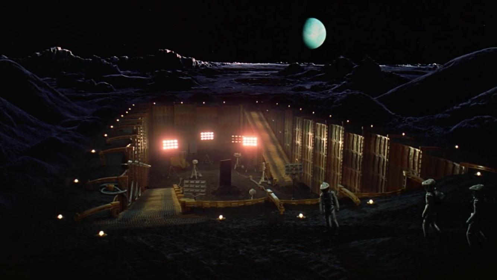
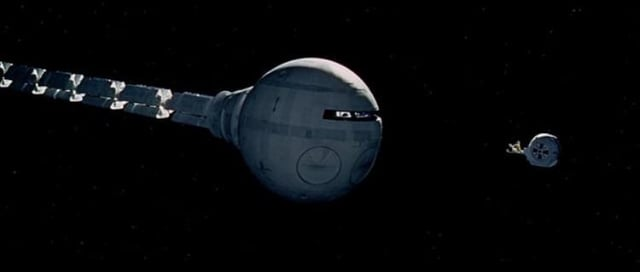
A base é comandada por Hal 9000, um computador com inteligência artificial e de acordo com ele, jamais pode errar! Hal 9000 comete um erro: transmite uma informação errada, provocando o comandante Bowman e o co-piloto Paul discutirem a possibilidade de desligá-lo, assim, evitando novas falhas. Hal 9000 temendo que isso aconteça, conspira para matar toda tripulação. Apenas Bowman no final sobrevive a tempo de desconectar as memórias de Hal.
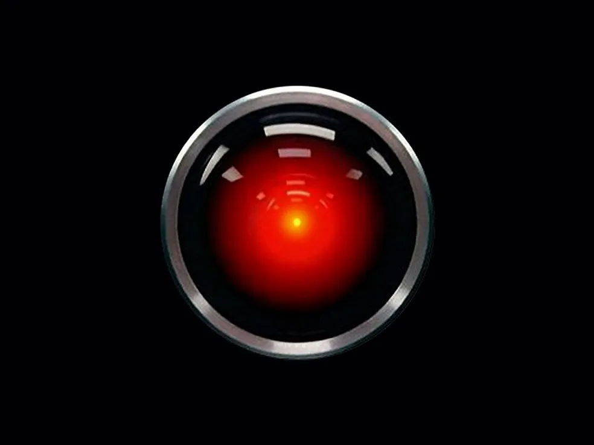


Durante a sequência do filme tudo muda! O comandante decida avançar sozinho até Júpiter, mas ao terceiro ato tudo perde o controle. Trazendo uma narrativa visual, sem diálogo e transcendente em vários sentidos!
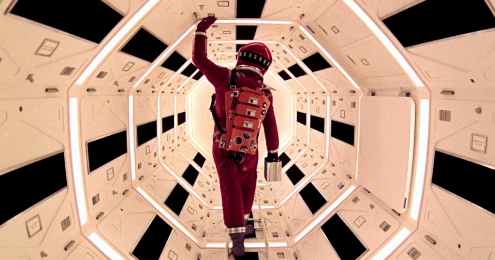
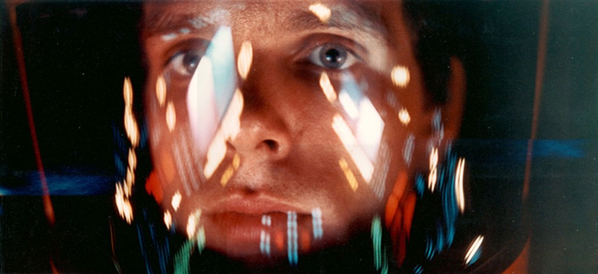
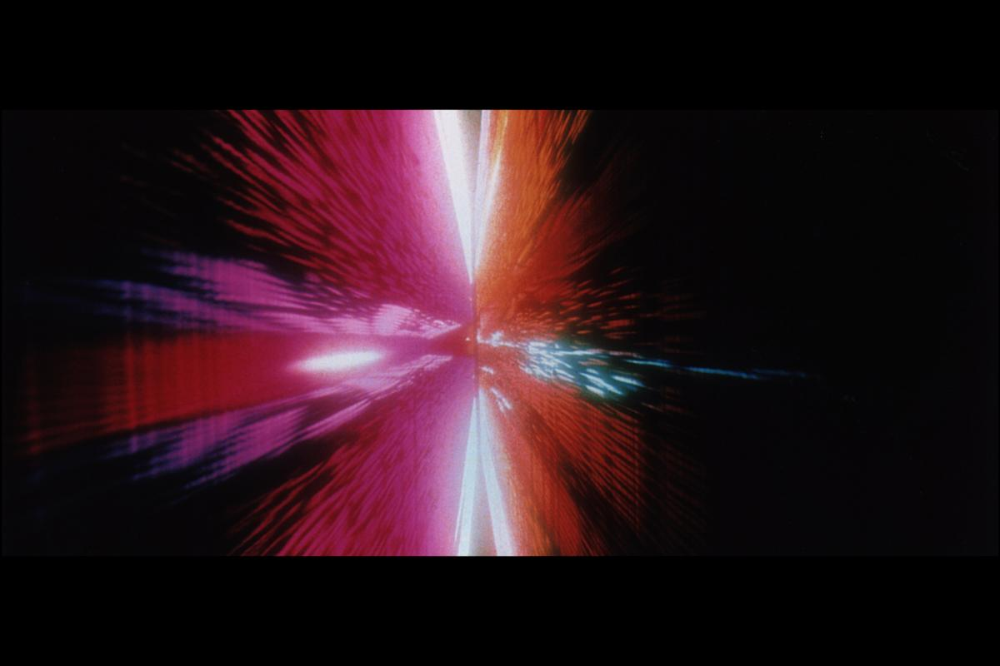
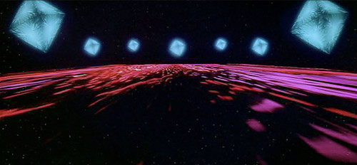
Apesar de muitos especularem o final do filme, Kubrick já havia explicado, afirmando que este final é um experimento. No roteiro ele também afirma: “Agora, a longa espera estava terminando, em mais um mundo, a inteligência havia nascido e estava escapando de seu berço planetário.”. O experimento do monólito preste a atingir seu climax!
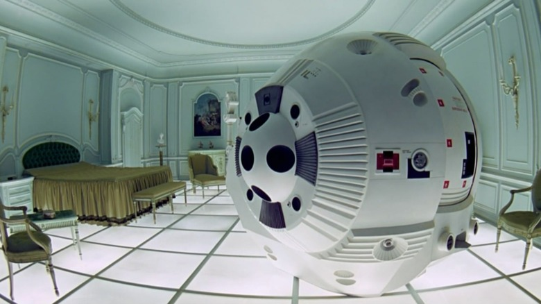

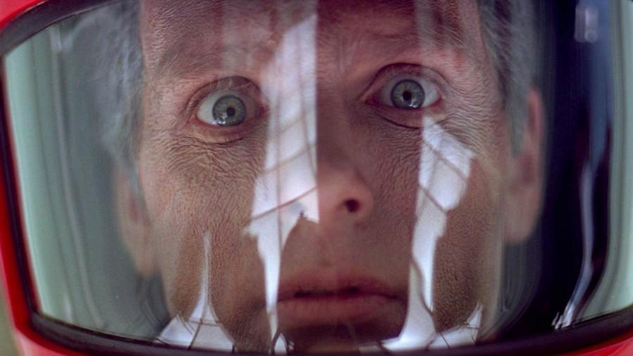
Kubrick afirma que Bowman é capturado por estes seres divinos que possuem poderes. Ele acreditava numa forma transcendente da divindade tecnológica em certos sentidos e a ciência poderia explicar uma forma de Deu, sendo possivelmente um extraterrestre, tão mais evoluído que o ser humano. Ele afirma que tais criaturas capturam Bowman, inserindo numa espécie de “zoológico”, retratado na casa que lhe fora criada para recebe-lo. O término da análise de Bowman já estando velho, transformam em uma supercriatura que é enviada para terra. O próprio Kubrick afirma que tal ato é transcendente, extrapolando o mundo material e suas limitações.
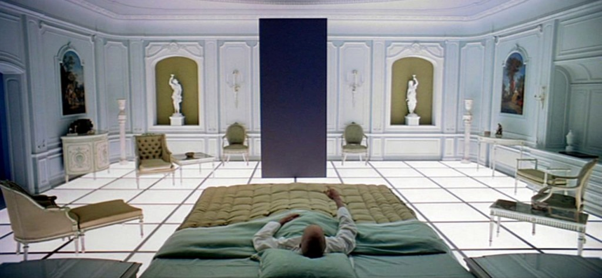

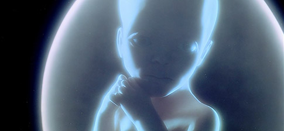
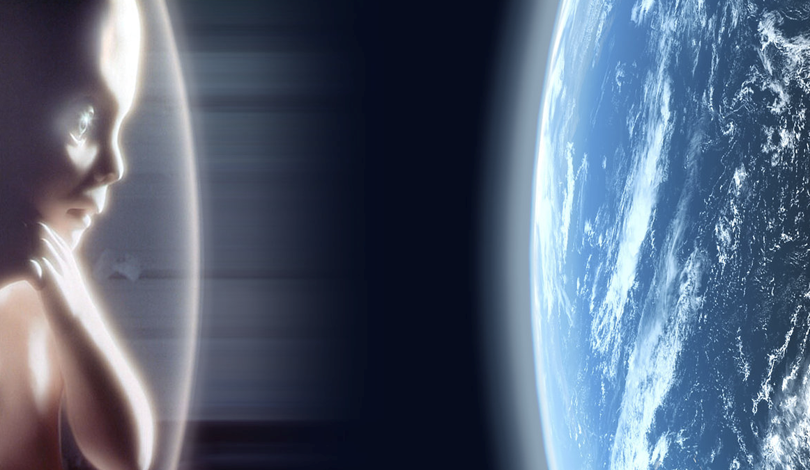
Em sua percepção, a evolução humana é algo único, difícil, a nível de precisar de ajuda externa. Todas as chances estavam contra a espécie, sendo necessário que a informação fosse passada de fora para dentro da humanidade, através dos indivíduos. O monólito torna-se uma referência de como as pessoas aprendem a se comportar e evoluir, através de uma tela numa análise interpretativa.
O poder da influência em sua obra O Iphone imita essa versão minimalista criando uma revolução tecnológica em nossas vidas! Kubrick estava transmitindo a mensagem em sua obra o poder do próprio cinema e neste sentido, torna-se uma metanarrativa. O poder daquilo que vemos, a formação de nossa consciência, aliada ao impacto da cosmovisão cinematográfica, exercendo um papel transformador na sociedade e nas perspectivas individuais. Numa análise superficial o filme trata-se de alienígenas ajudando seres humanos evoluírem, mas este é o nível superficial como Kubrick afirmou.
A perspectiva de Kubrick não tem como objetivo final a tecnologia! No caminho a Júpiter, Hal 9000 falha. Acreditar que a tecnologia é o ápice da existência humana não tem como essência do filme. Em 2001 Bowman não é transformado em uma peça tecnológica e sim um bebê! Um bebê incomum, mas ainda assim, humano!
Conclusão
Kubrick sugere que a evolução humana depende de forças além da compreensão racional.

Kubrick tinha como pensamento: aquilo que chamamos de Deus, seria uma forma superior de vida, tão maior que nós, ao ponto de não captar, ou caber no imaginário humano!
2001 – Uma Odisseia no Espaço tem como mensagem principal transmitir não apenas interferência alienígena na evolução humana, mas das implicações em nosso relacionamento com a tecnologia e em nossa identidade como ser humano.